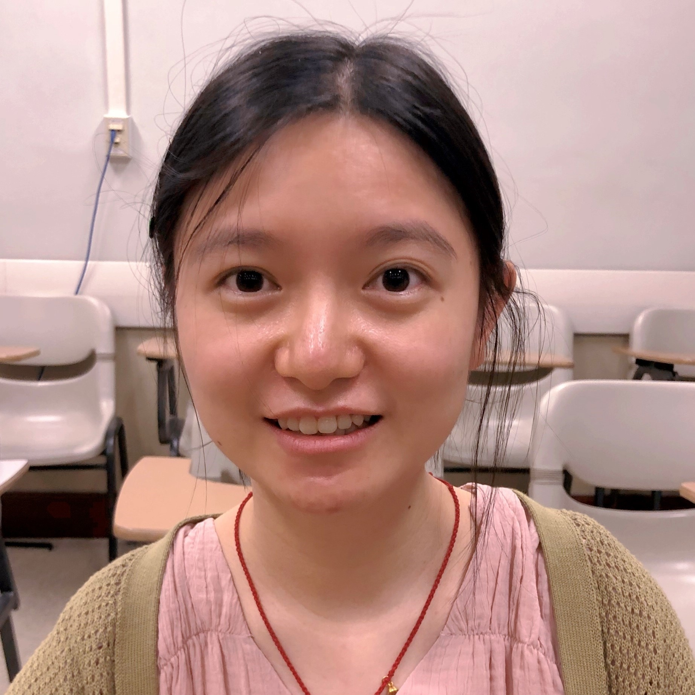

Exploiting symmetry in structured data is a powerful way to improve the generalization ability, data efficiency, and robustness of AI systems, which leads to the research direction of equivariant deep learning. Showing its effectiveness, it has been widely adopted in a large variety of subareas of computer vision, from 2D image analysis to 3D perception, as well as further applications such as medical imaging and robotics.
Our topics include but are not limited to:
- Theoretical foundations of equivariant deep learning with symmetry and group theory.
- Equivariance by design: Neural network architectures and mathematical guarantees.
- Equivariance from data: Learning equivariant and invariant features.
- Applications in 2D and 3D computer vision and robotics.
- Applications in broader science: computational biology, medicine, natural science, etc.
- Equivariance in the large-model era and potential future directions.
Keynote Speakers

Leonidas Guibas
Stanford
Stanford

Haggai Maron
Technion & NVIDIA
Technion & NVIDIA

Carlos Esteves
Google

Erik Bekkers
UvA
UvA

Nina Miolane
UCSB
UCSB
Tutorial

Stefanos Pertigkiozoglou
UPenn
UPenn
Evangelos Chatzipantazis
UPenn
UPenn
Schedule
| Session 1: Equivariance Theory and Network Design | 08:30-11:45 |
| Opening Remarks and Welcome | 08:30-08:45 |
|
Keynote Talk: Haggai Maron
Exploiting Symmetries for Learning in Deep Weight Spaces
|
08:45-09:30 |
|
Keynote Talk: Leonidas Guibas
Learning and Enforcing Equivariance
|
09:30-10:15 |
| Coffee Break | 10:15-10:30 |
|
Keynote Talk: Erik Bekkers
Neural Ideograms and Geometry-Grounded Representation Learning
|
10:30-11:15 |
| Spotlight Talk
LeaF: Learning Frames for 4D Point Cloud Sequence Understanding
|
11:15-11:30 |
| Spotlight Talk
EquiAdapt: Equivariant Adaptation of Large Pretrained Models
|
11:30-11:45 |
| Lunch Break | 11:45-12:30 |
| Accepted Paper Poster Session | 12:30-14:00 |
| Session 2: Applications in Computer Vision and Beyond | 14:00-17:30 |
|
Keynote Talk: Carlos Esteves
Geometric Deep Learning for Weather
|
14:00-14:45 |
|
Keynote Talk: Nina Miolane
Hierarchical G-Equivariance in Vision
|
14:45-15:30 |
| Coffee Break | 15:30-15:45 |
| Spotlight Talk
Diffusion-EDFs: Bi-equivariant Denoising Generative Modeling on SE(3) for Visual Robotic Manipulation
|
15:45-16:00 |
| Spotlight Talk
DiffAssemble: A Unified Graph-Diffusion Model for 2D and 3D Reassembly
|
16:00-16:15 |
| Tutorial: Getting Started with Equivariant Networks | 16:15-17:15 |
| Conclusion | 17:15-17:30 |
Accepted Papers
| (Spotlight) LeaF: Learning Frames for 4D Point Cloud Sequence Understanding | |
| SERNet-Former: Semantic Segmentation by Efficient Residual Network with Attention-Boosting Gates and Attention-Fusion Networks | [Poster] |
| Living Scenes: Multi-object Relocalization and Reconstruction in Changing 3D Environments | |
| Making Vision Transformers Truly Shift-Equivariant | [Poster] |
| Stability Analysis of Equivariant Convolutional Representations Through The Lens of Equivariant Multi-layered CKNs | |
| TetraSphere: A Neural Descriptor for O(3)-Invariant Point Cloud Analysis | [Poster] |
| SurfelReloc: Surfel-based 3D Registration with Equivariant Features | [Poster] |
| Improving Equivariance in State-of-the-Art Supervised Depth and Normal Predictors | |
| (Spotlight) Diffusion-EDFs: Bi-equivariant Denoising Generative Modeling on SE(3) for Visual Robotic Manipulation | [Poster] |
| Learning SO(3)-Invariant Semantic Correspondence via Local Shape Transform | [Poster] |
| Neural Processing of Tri-Plane Hybrid Neural Fields | [Poster] |
| (Spotlight) EquiAdapt: Equivariant Adaptation of Large Pretrained Models | [Poster] |
| RiEMann: Near Real-Time SE(3)-Equivariant Robot Manipulation without Point Cloud Segmentation | [Poster] |
| Equivariance versus Augmentation for Spherical Images | [Poster] |
| Leveraging SE(3) Equivariance for Learning 3D Geometric Shape Assembly | [Poster] |
| EqvAfford: SE(3) Equivariance for Point-Level Affordance Learning | [Poster] |
| Color Equivariant Network | [Poster] |
| (Spotlight) DiffAssemble: A Unified Graph-Diffusion Model for 2D and 3D Reassembly | [Poster] |
| Steerers: A framework for rotation equivariant keypoint descriptors | [Poster] |
| Improved Canonicalization for Model Agnostic Equivariance |
Organizers

Congyue Deng
Stanford
Stanford

Jiahui Lei
UPenn
UPenn

Yinshuang Xu
UPenn
UPenn

Li Yi
Tsinghua
Tsinghua

Christine Allen-Blanchette
Princeton
Princeton

Vitor Guizilini
TRI
TRI

Ameesh Makadia
Google

Kostas Daniilidis
UPenn
UPenn